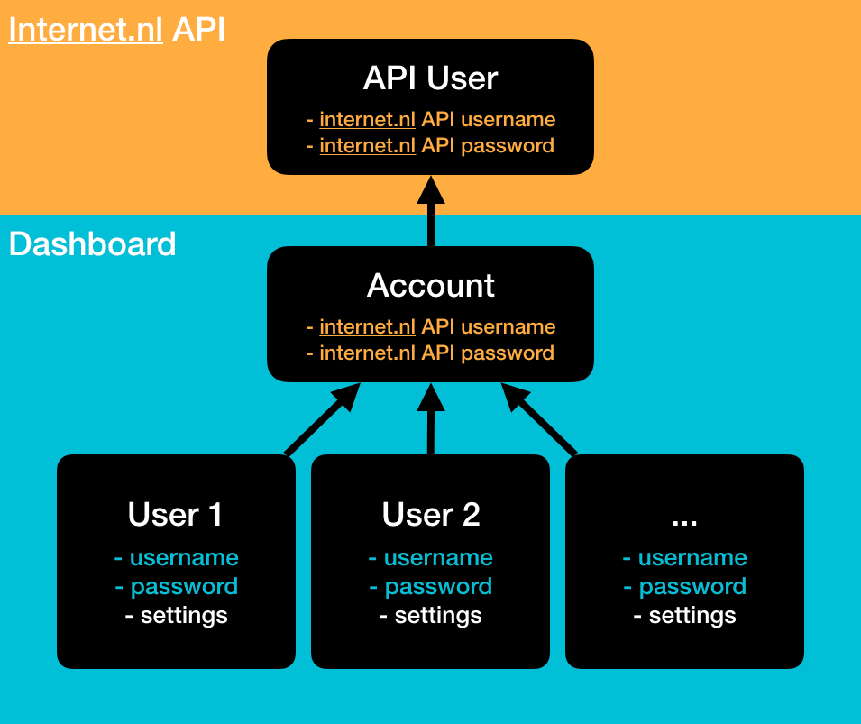
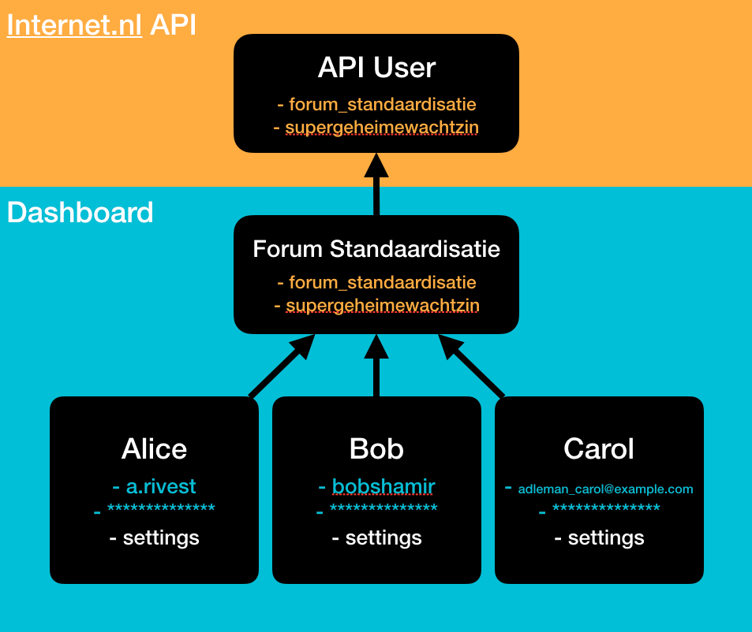
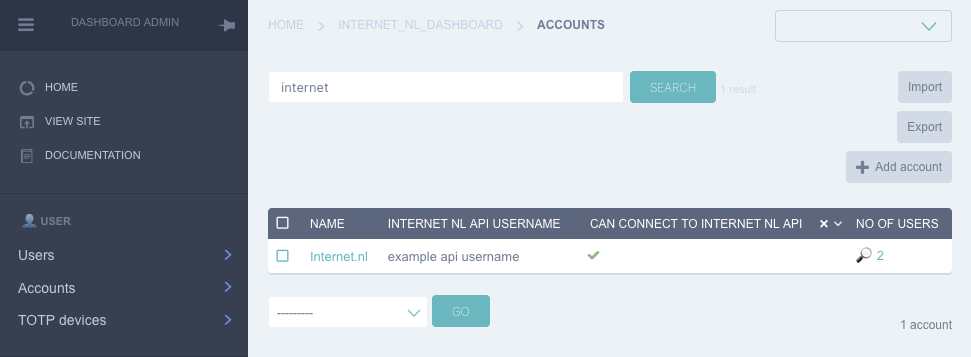
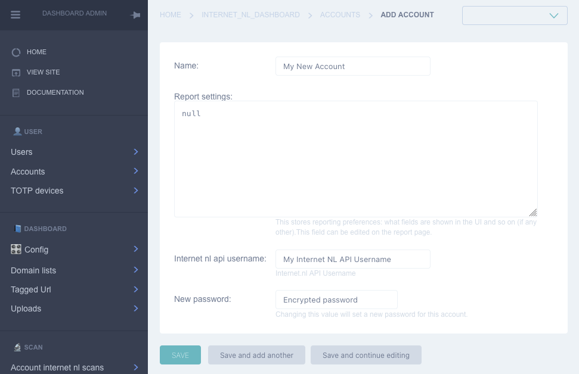
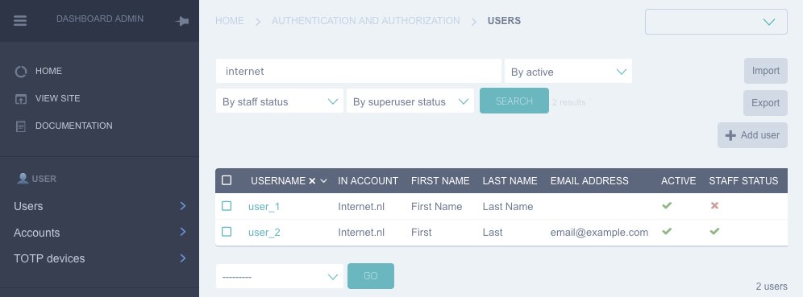
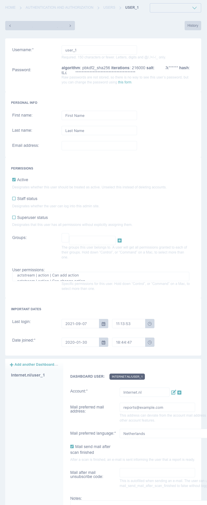

2. Dashboard User Management¶
2.1. Overview¶
The dashboard knows of three places that have to do with users:
The API User
The Account (which is a name for multiple users)
The User
These connect to each other as shown in the following image.
Summarized:
An account can connect to the Internet.nl API using credentials.
An account holds domains, report settings, scans and reports
A User is part of an Account, there can be multiple users for an account
A User has their own username, password and settings
We know that ‘account’ and ‘user’ is ambiguous.
2.1.1. Abstract¶
2.1.2. In practice¶
2.2. Management¶
User and account management in the dashboard is done via the Dashboard app and the Django Admin Interface. The latter is a bare bones data management application that allows editing data directly onto the database. The user experience is good enough for system administrators that need ultimate power and flexibility. With great power comes great responsibility.
2.2.1. Account Management¶
Accounts can be created using the accounts menu. Accounts contain very little information. You will see report settings, which don’t have to be altered. Just fill out the name and the Internet.nl API credentials.
Here is an example of a filled in account. Notice how passwords here are not hashed, but encrypted. That’s because they need to be sent to the API in a way that the API can read it. These credentials are sent over TLS to the API.
2.2.2. User Management¶
User management is a bit more challenging. An account can have multiple users. That’s what you see in the screenshot below: both users are in the ‘Internet.nl’ account.
Editing a user reveals a long form. This form allows editing all the standard user information as well as user information specific to the dashboard experience.
In the top part of the form you can setup a username, password, first name, last name and e-mail.
Permissions only require the ‘active’ field. If you want to make somebody staff or superuser, they first have to set up their Second Factor authentication after logging in. No Groups of “User Permissions” need to be set up.
The last part of the form are the settings the user can edit when logged into the dashoard. Here you can specify under which account the user operates. You can leave the other fields empty, they can set that up themselves.
